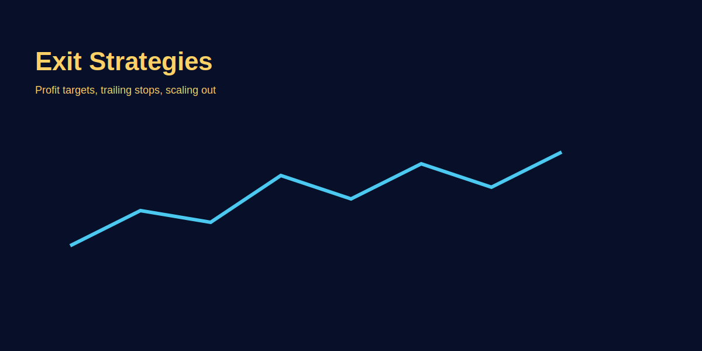

Exit Strategies Explained
Intro
Entry is half the job—exiting well decides final performance. Learn structured exits: fixed targets, trailing stops, and scaling out.
Step-by-step
- Define a target and a stop at the time of entry.
- Plan partial exits at predefined R multiples.
- Use trailing stops once trade moves in your favour to protect gains.
GOLD example
On XAU/USD long, initial target could be 1.5–2R, with a partial exit at 1R and a trailing stop at breakeven + ATR-based buffer.
Image examples
Common mistakes
- No plan: leaving exits to emotion.
- Moving stop to chase profits without rules.
Pro tips
- Predefine scaling rules: e.g., 50% at 1R, 25% at 1.5R, rest trailed.
- Combine ATR with structure-based stops for robustness.
Risk warning
No exit method removes risk—always limit position size and respect your stop.
FAQs
- Kab partial exit lena chahiye?
- Predefine based on R multiples and stick to it.